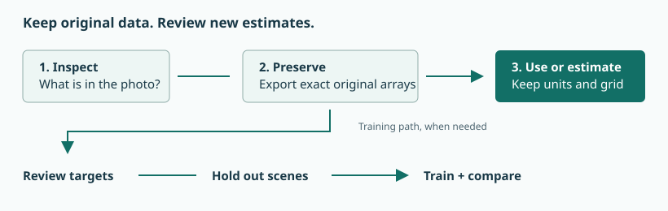
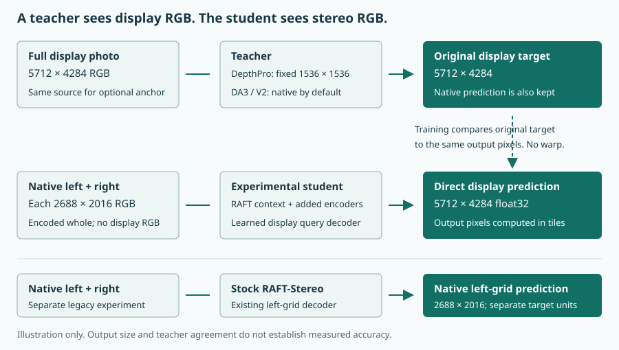

Make sense of depth.
Learn what your photos contain, keep their data safe, and choose useful training settings. Start with one photo and one clear goal.
Version 0.9 is still in development. Save formats may change before 1.0. Keep original photos and backup copies.
What would you like to do?
Show me the steps
Do I need to train a model first?
No. You can extract data already in a photo right away. You can also use an existing compatible RAFT model to estimate depth from stereo. The display depth model needs its own training before use. Train only after reviewing its targets and keeping separate scenes for testing.
Projects keep your work together
Open IPDE Studio. Choose New project, give it a name, and choose a folder. Pick a purpose that fits your work. You can change it later.
A project holds settings, datasets, training runs and exports. Your original photos can stay where they are. The main window suggests a next step and shows warnings such as a missing model or dataset.
| App | Use it for |
|---|---|
| Extractor | Get original depth, HDR maps, masks and stereo pictures. |
| Photo Studio | Export one plane, make a people cutout, or create a new depth estimate. |
| Raw Studio | Keep RAW data and calibration; create separate RGB, depth or people masks. |
| Dataset Studio | Build, review, edit and organize training data. |
| Trainer / RAFT Studio | Train, save, export and compare models. |
What happens when I close Studio?
On macOS, Studio can stay in the menu bar after its window closes. Use its menu to reopen the window or switch projects. Use Quit to end Studio. If its other apps are open, Studio asks about closing them too.
Can projects share a dataset?
Yes. In Dataset Studio, link another dataset or link datasets from another project. This stores its location without copying its large files. Keep the original folder available. Editing a linked dataset edits that original dataset. Removing its link does not delete it.
Extract what is already in a photo
- Open Extractor from your project.
- Import a HEIC or drag it into the window.
- Read the list of available products. A file may have depth, masks, HDR gain maps or a stereo pair.
- Select the products you need and choose an output folder.
- Export. Keep an exact NPY companion when you want the array's full numeric form.
The original data is kept as decoded. It is not made brighter, stretched, sharpened or resized. A preview may look different because it is a viewing copy.
Check what the numbers mean
A depth map may store meters, inverse distance or camera disparity. A bright part is not always "far away." Read the product's units. Raw extraction alone does not turn camera codes into true distances.
What are HDR gain maps and mattes?
A gain map helps an HDR viewer show a wider brightness range. It is not depth. A matte is a mask that marks part of a picture, such as a person, hair or skin. A mask can help make a cutout but does not measure distance.
When should I select a RAFT export?
Select one when you want a new depth estimate from the left/right camera pair. The selected model supplies the result. All RAFT choices remain visible when you change models: depth, height/displacement, previews, native disparity, signed flow, support and supported depth. Each row explains its grid and units. Export only original planes when you need data already stored in the file.
RAFT depth EXRs use one scalar channel; RAFT previews use grayscale PNG without redundant alpha. Color Matching affects inference copies and leaves original exported photos unchanged.
Why are some depth pixels missing?
Some points are hidden from one camera or cannot be matched. Supported-depth products mark those points as invalid, often with NaN, which means "not a number." A dense RAFT product keeps more estimates, including uncertain ones. Do not treat every filled pixel as a proven measurement.
Photo Studio: maps, masks and cutouts
Import a HEIC and choose an operation. Original exports the selected stored plane. Depth upscale makes a larger derived map where matching to the photo is supported. Learned depth or RAFT depth makes a new estimate.
Make a people cutout
- Select the person matte and useful layers such as hair or skin.
- Use Preview composite. Look closely around hair, glasses and hands.
- Uncheck a layer that selects the wrong part of the picture.
- Choose PNG or TIFF when you need color and transparency, then export.
Layers are combined by their strongest coverage. This avoids making overlaps too opaque. Sky is not a people layer. Use Isolate for one selected mask region.
What does Export & copy do?
It exports the product and copies PNG bytes when image pasting is suitable. Other formats are copied as files. Paste the files into Finder or a program that accepts that format.
Why can a HEIC repair or privacy export fail?
The writer may lose a mask, change pixels, or drop camera data. IPDE checks the result and refuses it if needed. Keep the original file and use separate lossless exports. Removing recorded location data does not hide people or places visible in the photo.
Raw Studio: keep the source separate
A RAW file can contain camera sensor samples or a stored linear raster. Import it and inspect its precision and calibration. Original keeps the source file. A sensor export keeps the available stored array and camera details.
Developed RGB is a new color image. It may contain values below zero or above one; the numeric export keeps them. Depth and people masks are separate estimates. Their previews are for viewing.
A crop needs the right grid
Crop coordinates belong to the product you selected. A sensor pixel, a developed photo pixel and a model's depth pixel may be in different places. Do not reuse crop numbers across these grids without checking.
What are black level and white level?
Black level is the camera's stored offset for no light. White level describes where the sensor saturates. The exported camera details also explain color layout and other calibration. Keep those details with sensor data.
Know which picture each map belongs to
Your file may have two 2688 × 2016 stereo pictures and a separate 5712 × 4284 display picture. Dataset teachers use the full display picture. Stock RAFT uses the left and right stereo pictures. The display depth model also uses the native stereo pictures, but learns to predict on the big display grid. Their cameras and framing can differ, so maps from different grids are not freely interchangeable.

Three teacher sizes to keep straight
- Source photo size
- The full display picture sent to the teacher. New datasets do not send either stereo picture to the teacher.
- Model processing size
- The size used inside the model after its required resizing. A small model grid can lead to a smooth map even when the source photo is large.
- Stored output size
- The saved map matches the full display photo. The app saves this full map as lossless 32-bit EXR. You can choose to keep the model's smaller native prediction in Advanced. Saving more pixels does not add measured detail.
DepthPro always resizes the full source to 1536 × 1536 inside the model. It then makes a map the size of the source. Changing another teacher's input size does not change DepthPro's fixed size.
Depth Anything V2 and DA3 start at zero, requesting native input. The former 1036-pixel GUI default is restored to zero once; later explicit custom settings are kept. A 5712 × 4284 processing grid stays exact because both sides divide evenly by 14. Other sizes may need a small resize to fit that rule. The setting also applies to a configurable second or third teacher.
Will native DA3 fit in 64 GB of memory?
Native GIANT inference still needs substantial memory and computation. IPDE bounds global attention queries and decoder working arrays while retaining the whole image. It does not predict and stitch separate photo crops. These changes reduce memory pressure, but do not guarantee that every native photo is affordable on every device.
Run one teacher at a time. If native input exceeds memory or takes too long, explicitly choose a smaller processing size and compare the results. The app does not silently lower the resolution. More file threads cannot remove model working-memory limits.
What does the tile or patch size change?
RAFT depth on the display grid uses Depth tile side length (pixels). The value 768 means at most 768 × 768 pixels in a temporary decoder tile: 589,824 pixels. A 5712 × 4284 map uses 8 columns × 6 rows = 48 portions, with smaller tiles at the right and bottom boundaries. These portions cover one 5712 × 4284 map. The tile count does not multiply its width or height.
The model reads full stereo photos, and every usable pixel in the reference depth map contributes to training. RAFT disparity on the left camera grid instead uses Native stereo patch pixels, a crop of original stereo pixels.
The depth map is used during training: the loss compares each predicted depth pixel with its reference depth pixel and updates model weights. Left/right RGB supplies the model inputs. RAFT correspondence aligns the right view to the left before encoding; their features form one fused field. A shared decoder predicts one depth map. At export, only the stereo RGB pair is required; the reference depth supplies training labels rather than an extra inference input.
Full output size does not guarantee accurate fine detail. Compare the selected model with held-out reference depth and direct display AI. Models trained with the previous independent-camera decoder retain their old behavior; start a new training run for the aligned decoder. Those old head and optimizer weights cannot resume into the changed architecture.
How large is a float depth map?
One channel, 32-bit float, no alpha. This shows raw size before lossless compression.
Can I use one lossless EXR?
Yes, for one float32 depth result. Use one 32-bit FLOAT channel and lossless ZIP compression. No RGB or alpha is needed. Keep the existing values without a brightness curve or range stretch. Float16/"half" would reduce float32 precision, and lossy compression would change values. Keep calibration and validity information too. A scalar EXR alone is not a complete training dataset.
Which format should I choose?
EXR works for floating depth. NPY or compressed NPZ works for exact numerical arrays. PNG works for supported unsigned 8- or 16-bit planes. A JPEG or screen image loses data and should not be a depth label. A larger file or more storage bits cannot fix inaccurate source values.
Build a dataset you can trust
Click a dataset in the left sidebar to open its name and photos on the right. Drop local HEIC, HEIF or HIF photos onto Photos and depth, or use Add photos…. New photos appear immediately and their depth starts automatically after their paths save. Duplicate paths and aliases are kept once. New dataset… is only for creating a separate dataset. While generation is active, photo and model changes are disabled. If the app reports Generation interrupted, use Recover interrupted dataset to keep verified completed results and enable editing after recovery.
A dataset pairs stereo photos with depth targets. A teacher is a model that makes estimated targets from the full display picture. A target is the answer you ask a model to learn. Bad or blurry answers can teach bad or blurry output.
- Open Dataset Studio and import calibrated Spatial Photos. Invalid photos are skipped and listed.
- Choose one to three local teachers, their processing size and device. Each teacher uses the full display picture. Start with one teacher and leave estimated meter scale off unless you need it.
- Create the dataset. Photos and depth opens for review.
- Review the display map beside the display photo. Check any left-grid training target beside the left stereo photo. Use native pixels to check edges, flat walls, fine details and shiny areas. Use the teacher buttons to discard a bad map, or Remove selected to discard supported teacher maps. A discarded map must be generated again.
- Choose a training/validation split with separate captures or scenes.
- Open a suitable dataset in Trainer. Prepare a collection if you need to combine datasets or change the split.
Select a teacher row and use Save full-resolution depth… for raw display-grid float32 EXR or an exact NPY array. Viewing modes do not change these exported values. Regenerate depth replaces that model's result in place and keeps its photo and split. Failed or cancelled additions remain available for retry.
Which depth model can Dataset Studio generate?
Dataset Studio uses DepthPro for new maps and regeneration. DA3 and V2 generation is temporarily disabled because full-resolution processing takes many minutes per photo. Existing maps remain available for inspection, full-precision saving and training.
Generate DepthPro for one photo or select several photos for one batch. Save full-resolution depth exports the stored raw map as floating-point EXR or exact NPY. Regenerate depth replaces DepthPro in the same photo row.
DA3 and DA2 remain available as individual exports in Extractor. The export asks you to continue or cancel after explaining the long runtime.
Why is Depth Anything disabled in Dataset Studio?
Native DA3 took about 20 minutes for one 5712 × 4284 photo in testing. DA2 also takes minutes at native resolution. Reducing the processing size sacrifices detail, so dataset generation uses DepthPro for now. Individual full-resolution Depth Anything exports remain available in Extractor with a delay warning.
Which model output can learn from my display map?
Choose RAFT depth on the display grid for full display targets. The target must match the same full display photo and its exact size. Its source details must be recorded. Keep one unit type per run: meters, relative depth, or relative inverse depth.
RAFT disparity on the left camera grid needs suitable targets on the native left grid. Nearby and faraway objects can shift by different amounts between cameras. One fixed warp cannot solve that. The app does not turn display labels into stock targets or use a left-photo teacher as a fallback.
What does Relative teacher scale do?
Some teachers give near/far ordering without a reliable meter scale. A metric anchor can add an estimated meter scale. DepthPro supplies that anchor from the same full display photo. That is agreement between models, not a tape-measure reading. Use it when an estimated meter scale is useful. The display depth model can learn relative maps directly, so an anchor is optional. Keep unit types separate. DepthPro's own meter estimate does not need a second anchor. Meter scale does not fix different camera grids.
What should I keep for validation?
Keep different scenes or captures that training will not see. All teacher versions of the same photo must stay together. Burst photos and related views also belong together. A category such as "flowers" does not mean those photos are one independent scene.
The independent-scenes setting records what you know about your groups. It does not check that they are truly separate. A random split of nearly identical pictures can make the score look much better than new-scene results.
Which split choice fits my data?
Global random picks separate components from all selected datasets. Equal per dataset tries to hold out the same number from each dataset. Separate validation datasets holds out entire selected datasets. A seed lets you repeat the choice. Keep enough eligible examples on both sides; 0% or 100% cannot normally supply both.
Why is checking the dataset slow?
Reading and checking every compressed array can take a long time. For supported datasets made by IPDE, training checks the plan and split first, then checks each sample's bytes and geometry as it uses them. External or unknown datasets still need a full check before training. Corruption stops the run. Faster startup does not remove the checks.
Can I make storage smaller?
Yes. New datasets save one full depth result per teacher in a single lossless 32-bit EXR. The two stereo pictures and the display picture use lossless PNG. The dataset also needs a small file with camera information, units and file checksums.
The app leaves out smaller teacher predictions, confidence images and unrelated hidden images by default. You can keep those extras in Advanced. The original photo is unchanged. Masks that can be calculated from depth are not stored twice; special masks are kept.
Start with one teacher. Leave estimated meter scale off if relative depth meets your needs. Extra teachers and meter-scale estimates add different maps and use more space. Compact creates a new verified EXR/PNG copy of an old dataset, keeping its existing maps and extras. Linked datasets avoid a second copy. Do not delete a source until you know which files and projects still need it.
A 5712 × 4284 depth map is about 93.35 MiB before compression. Three hundred maps are about 27.35 GiB before compression, plus pictures. On one real map, EXR used 65.6 MiB and NPZ used 77.5 MiB. Other maps may compress differently.
Training: start small, then compare
Open Trainer with a suitable dataset and an initial RAFT checkpoint. Choose Model output: RAFT depth on the display grid or RAFT disparity on the left camera grid. The simple view has Quality and Length. It chooses a plan based on eligible data size. Read the planned steps before starting.
What does Quality change?
These are simple-view presets. Advanced settings use the values currently shown in the app: if RAFT iterations is 4, the run and plan use 4. This explanation does not change the app settings.
For the display depth model, higher quality means wider added features, bigger output tiles and more RAFT refinement passes. All usable full-display target pixels are still used. For stock RAFT, it means bigger native crops and more passes. It takes more time and memory. It does not fix wrong labels. Longer training means more learning updates. It can help until the model starts memorizing the training examples.
Distillation or supervised?
If you only have teacher estimates, start with distillation. A lower error then means "closer to the teacher," not "proven closer to the real world." Do not mark a teacher map as a measurement.
Steps and epochs, without the guesswork
An epoch visits every eligible image/teacher entry once. Steps Per Update says how many image results are combined before one model update. Total Steps counts those model updates. The default is one image result per update. Output tiles do not count as Total Steps.
Try your training plan
Each teacher variant counts as a separate entry. A final short group still makes one update. The app filters out unsuitable targets before counting.
Use an epoch limit to give all entries the same number of visits. Use a total-step limit to stop after a set update budget; it can stop partway through an epoch. Progress shows where you are in the epoch and in all planned steps.
Validation checks examples kept out of training
You can validate every epoch or only when saving checkpoints. You can check the whole validation set, or choose up to N random eligible entries on each check. The app caps N at the available held-out count: a default of 16 checks all three when only three exist. A smaller sample is faster but its score can bounce around. New display runs check the whole held-out set before updates and at the end. Only complete checks choose the best checkpoint.
Try a validation choice
Set entries per check to 0 for the whole set.
What does the error number mean?
For the display depth model, error is the average absolute difference divided by the target. A fraction of 0.10 means 10% average relative error. The report also shows the average raw difference in the target units. Stock RAFT uses average stereo-flow error in pixels. Lower can be useful when comparing the same data and settings. A teacher target can be wrong, so a low teacher-agreement score alone does not prove accurate distance.
Should I train the full network?
The full network changes more of the model. It uses more memory and can memorize a small dataset. The display default trains its added encoders and decoder while keeping RAFT frozen. Full-size or unknown input sizes keep this scope even with many images. Automatic full-network training needs at least 500 entries and recorded inputs no larger than 512 × 512. Stock RAFT uses a smaller update block for small datasets. Try the default first. Change this in Advanced only when you have enough varied scenes and held-out comparisons support it.
What happens if validation crosses my early-end goal?
You can set an error goal in Advanced. If a random sample passes it, Trainer checks the full validation set. It saves a final checkpoint and stops only if the full check still meets the goal. A low goal is not a promise of perfect depth.
Save your work and stop safely
Trainer shows quality warnings and the path to the best checkpoint from complete held-out checks. The final weights can score worse. Use Select best checkpoint for comparison / export to inspect that saved snapshot before choosing a model.
A checkpoint stores what the model has learned. Choose to save every epoch, every few epochs, every few Total Steps, or only at the end. Frequent saves use more disk space and can slow the run briefly.
Save checkpoint now requests a save after the current safe model update. You can export that model to try it while the run continues. Stop also waits for a safe point and saves work before ending.
Resume is different from using a model
A training checkpoint can include the update state and progress needed to continue. A model exported only for inference may not. Keep the training checkpoint, run files and original dataset. Resume into a new run with the same data and compatible settings.
Will a force quit save the current step?
No guarantee. Use Stop when possible and wait for the saved result. A force quit, crash, power loss or full disk can prevent saving. Intermediary checkpoints limit how much work is at risk.
Why did training stop by itself?
The loss may be not-a-number or exactly zero, or the training error may pass Maximum safe training error. The display safety limit uses fractional target error. Stock RAFT uses pixel error averaged across refinement passes. Trainer records why and saves recoverable state. Read that reason and inspect the targets and settings. The saved failure state is not automatically a good model to use.
Find the likely cause
My new depth maps look blurry
First inspect the teacher targets at native pixels. Check the size the teacher saw, not only the saved width and height. A tiny teacher input can produce a large but smooth target. Increasing epochs will not add missing target detail.
Next check which model output you chose and compare held-out results. The display depth model uses the full stereo photos. New runs include finer learned features and depth-edge supervision from the target. Existing V1/V2 models still run; compatible V2 resumes keep their older objective. Start a fresh run to use the new detail path, then check independent photos. Improvement on real captures still needs verification. Wider features and more refinement can cost more memory, but are not an accuracy promise. Stock RAFT uses native crops. They cannot turn estimates into measurements. Keep a separate-scene validation set and try a short run after each change.
The GPU is not busy, but training is slow
Check the current phase: reading arrays, checking, validating or saving may use the CPU or disk. Check that the selected device is MPS on Apple Silicon. GPU core count is not a field you should enter.
Automatic file threads use available CPU cores within memory limits. A bounded cache reduces repeated decoding. Display tiles change working memory and dispatch cost; native encoding can still be expensive. Stock crops change memory and context. Change one setting at a time and compare useful updates per minute. A higher load meter alone is not better training.
My EXR looks black or too bright
A depth file contains numbers, not a finished display picture. A viewer may expect values between zero and one, or show invalid values as black. Read the numeric range in a data-aware tool. Create a separate preview; do not stretch the scientific values to fix the display.
My display image and depth do not line up
The display picture may come from a different camera grid. Resizing the depth to the same width and height does not fix that. Check the product name and source grid. The display depth model predicts the display grid directly, but can still make mistakes. Stock left-grid output belongs beside the left photo. Its old registered display projection can be partial and is only an approximation. Failed registration should not be forced.
Validation looks good, but other photos look bad
Check whether similar captures reached both splits. Hold out independent scenes. Add more kinds of scenes and compare the baseline. A small sample or repeated teacher labels can give a misleadingly good score.
Where do I report a problem?
Open Help → Report Bug. Copy the About build information. Include the app name, what you did, selected sizes/settings and the error. Say whether validation used all images or a random sample. Share a small example when you can.
Open the bug form ↗Words you will see
- Auxiliary image
- An extra image stored inside a file, such as a depth plane or matte.
- Depth
- A distance or distance-like value for each point. Check its units and accuracy.
- Disparity
- How far a point shifts between the left and right cameras. It helps estimate depth.
- Calibration
- Camera numbers needed to connect pixels with geometry.
- Native grid
- The original width, height and camera coordinates of an array.
- Registration
- Matching positions across different pictures or camera grids.
- Teacher / target
- A teacher is a model that makes an estimated answer. That answer is a training target.
- Reference
- A declared measured or calibrated answer used for supervised training. Its source still matters.
- Epoch
- One visit through every eligible training entry.
- Optimizer update / Total Step
- One change to the model after combining the requested number of image gradients.
- Validation
- Checking examples that training did not learn from.
- Checkpoint
- A saved model, often with state needed to resume training.
- Float32
- A 32-bit floating-point number. It can store a wide range with finite precision.
- Lossless
- Saving or compressing without changing the stored values.
- NaN
- "Not a number." Often marks an invalid or unsupported sample.
Keep learning
The technical manual gives more detail about precision, modes and advanced controls. It is bundled as HTML and Markdown. Print its HTML to create a PDF.
- Read the professional user manual
- Download the editable manual
- IPDE source and releases ↗
- Official RAFT-Stereo model and examples ↗
- OpenEXR formats and compression ↗
- PyTorch on Apple MPS ↗
- pillow-heif decoding documentation ↗
The tools above are learning sources, not guarantees that a trained depth map is accurate. Test the result for your own purpose.
No matching topic. Try a shorter word, or clear the search to see the whole guide.